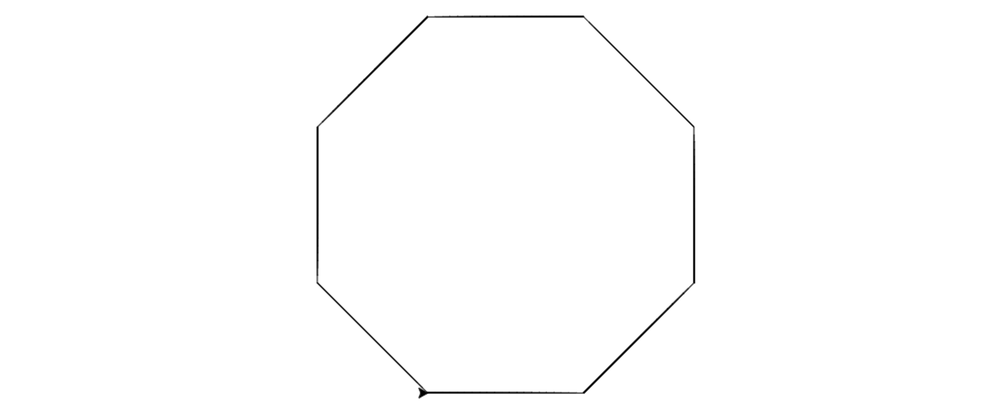

Grunnleggende programmering#
Vi lager mønstre med blokker#
Når elevene starter å programmere på en datamaskin, er det vanlig å bruke det som vi kaller for blokk-programmering. Det vil si at vi programmerer ved å dra ut ulike blokker som forteller datamaskinen hva som skal skje. I filmen nedenfor ser du hvordan dette gjøres i Trinket. Det fins veldig mange ulike tjenester som tilbyr elever og andre å programmere med blokker. Den mest kjente er kanskje scratch.
Oppgave 1#
Lag følgende figur med å bruke blokk-programmering:

Du kan programmere her:
I neste film ser du enda et eksempel på et program som lager et mønster.
Vi regner ut en sum#
Det er ikke bare geometriske mønster vi kan lage. I neste film ser du hvordan vi kan lage ulike variable og bruke dette til å summere opp store summer med tall. Vi skal i første omgang regne ut
I neste eksempel ser du hvordan vi kan bestemme summen av de 100 første oddetallene.
Python som kalkulator#
Du kan bruke Python til å gjøre avanserte beregninger. Men du kan selvsagt også gjøre enkle utregninger. Vi anbefaler at du starter med slike enkle utregninger når elevene skal lære å bruke Python. Det handler om å ufarliggjøre programmeringen litt. Så kan vi senere bruke løkker og betingelser.
Filmen nedenfor er laget til et kurse som digilær tilbyr til elever i ungdomsskolen som ønsker å ta Matematikk 1T mens de går i ungdomsskolen. I digilær brukes trinket i selve filmene, men du kan bruke hvilken som helst editor når du programmerer.
Sette inn i formler med Python#
Neste film viser hvordan du kan sette inn tall i formler for å regne ut ulike størrelser. Vi skal bruke formelen
til å regne ut trekanttall nummer 100.
Vi skal også se hvordan vi kan regne ut \(s\) når
og \(t=1.5\), \(v=10\)og \(a= -9.81\).
Regne ut en sum med Python#
Til slutt viser vi hvordan vi kan regne ut en sum i Python. Vi skal se på summen som vi regnet ut med å bruke blokk-programmering. Det vil si summen
$\( 1 + 2 + 3 + \cdots + 99+100\)$.